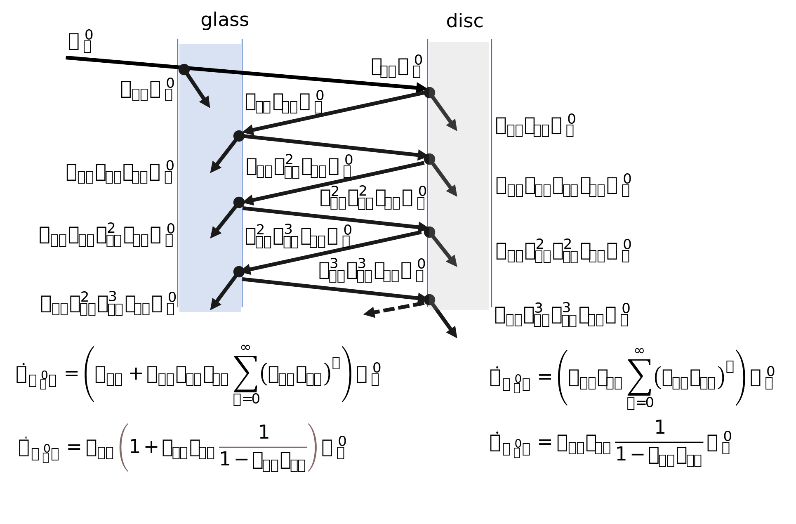

Greenhouse effect#

In this problem, only radiative exchange is considered.
A disc, assumed to be black on the illuminated face and perfectly reflective on the opposite face, receives solar radiation, \(E\) = 800 W/m², through a glass parallel to the disc. The assembly is perpendicular to the solar radiation. It is considered that the ambient environment, at temperature \(\theta_a\) = 20 °C, radiates like a black body.
Given data
\(E=800 \ \mathrm{W/m^2}\) - solar irradiance.
\(\theta_a = 20 \, \mathrm{°C}\), \(T_a / [\mathrm{K}] = 273.15 + \theta_a / [\mathrm{°C}]\) - ambient temperature.
\(M^o = \sigma T^4\) - radiant exitance of a black body at the same temperature as the surface (Stefan-Boltzmann law).
\(\sigma\) - Stefan-Boltzmann constant.
import numpy as np
σ = 5.67e-8 # W/(m²·K⁴) Stefan-Boltzmann constant
E = 800 # W/m², solar irradiance
θa = 20 # °C, ambient temperature
Ta = θa + 273.15
Ma = σ * Ta**4 # W/m², ambient excitance
Unprotected black disc#
Calculate the temperature of the disc, \(\theta_d / \mathrm{°C}\), considering the disc being a black body, unprotected by the glass.
Figure 1. Radiative energy balance.
From energy balance on the disc surface,
where:
\(E\) - solar irradiance, W/m².
\(M^o_d, \ M^o_a\) - radiant exitance of a black body at the same temperature as the surfaces of the disc and ambiance, respectively, W/m².
results the disc temperature:
or
print('Unprotected black body disc')
Md = E + Ma # Energy balance on disc
Td = (Md / σ)**0.25
θd = Td - 273.15 # °C, disc temperature
print(f'θd = {θd:.2f} °C - disc temperature')
Unprotected black body disc
θd = 109.75 °C - disc temperature
Partially transparent glass, black disc#
The glass has a reflection factor \(\rho_{Sg} = 0.07\) and a transmission factor \(\tau_{Sg} = 0.90\) for solar (i.e., short wave) radiation. It has a reflection factor \(\rho_{Lg} = 0.50\) and a transmission factor \(\tau_{Lg} = 0.20\) for thermal (i.e., long-wave) radiation. The disc is considered a black body. The disc is considered a black body on the illuminated side and a perfectly reflecting surface on the other side.
Short wave |
Long wave |
|||
|---|---|---|---|---|
ρ |
τ |
ρ |
τ |
|
Glass |
0.07 |
0.90 |
0.50 |
0.20 |
Disc |
0.0 |
0. |
0. |
0. |
Find the temperature of the glass \(\theta_g\) / °C and the temperature of the disc \(\theta_d\) / °C.
Figure 2. Radiative energy balance.
Energy balance on the glass and on the disc is:
or, in matrix form:
where the symbols are:
\(\alpha\) - hemispherical absorbtance
\(\tau\) - hemispherical transmittance
\(\rho\) - hemispherical reflectance
\(\varepsilon\) - hemispherical emissivity
\(E\) - solar irradiance, W/m²
\(M^o\) - radiant exitance of a black body at the same temperature as the surface, W/m²
and the indexes are:
\(L\) - longwave thermal radiation
\(S\) - shortwave radiation
\(a, \ d, \ g\) - ambiance, disc, glass.
By solving for \(M^o_g\) and \(M^o_d\), we obtain the temperatures:
and then:
print('Partially transparent glass, black disc')
ρ_Sg, τ_Sg = 0.07, 0.90 # glass, short wave
ρ_Lg, τ_Lg = 0.50, 0.20 # glass, long wave
α_Sg = 1 - ρ_Sg - τ_Sg
α_Lg = 1 - ρ_Lg - τ_Lg
ε_Lg = α_Lg
ε_Sg = α_Sg
A = np.array([[-2 * ε_Lg, α_Lg],
[ε_Lg, -(1 - ρ_Lg)]])
b = np.array([-α_Sg * E - α_Lg * Ma,
-τ_Sg * E - τ_Lg * Ma])
M = np.linalg.inv(A) @ b
T = (M / σ)**0.25
θ = T - 273.15 # °C, [glass, disc] temperatures
print(f'θg = {θ[0]:.2f} °C - glass temperature')
print(f'θd = {θ[1]:.2f} °C - disc temperature')
Partially transparent glass, black disc
θg = 130.45 °C - glass temperature
θd = 185.55 °C - disc temperature
Partially transparent glass, gray disc#
Let’s consider that the glass and the disc have the following radiative properties:
Short wave |
Long wave |
|||
|---|---|---|---|---|
ρ |
τ |
ρ |
τ |
|
Glass |
0.07 |
0.90 |
0.50 |
0.20 |
Disc |
0.35 |
0.10 |
0.30 |
0.10 |
Find the temperature of the glass \(\theta_g\) / °C and the temperature of the disc \(\theta_d\) / °C.
Figure 3. Short wave radiation from the sun.
Figure 4. Long wave radiation from the disc.
Figure 5. Long wave radiation from the glass.

Figure 6. Long wave radiation from the ambiance.
When \(|n| < 1\), the sum of a geometric series is
In radiative equilibrum, the heat balance (on the glass and on the disc) is:
where the heat flow rate are:
for energy balance on glass:
\(\dot Q_{Eg} = \alpha_{Sg} \left ( 1 + \rho_{Sd} \tau_{Sg} \frac{1}{1 - \rho_{Sg} \rho_{Sd}} \right ) E\)
\(\dot Q_{M^o_dg} = \alpha_{Lg} \varepsilon_{Ld} \frac{1}{1 - \rho_{Ld} \rho_{Lg}} M^o_d\)
\(\dot Q_{M^o_gg} = \left ( \alpha_{Lg} \rho_{Ld} \varepsilon_{Lg} \frac{1}{1 - \rho_{Lg} \rho_{Ld}} - 2 \varepsilon_{Lg} \right )M^o_g\)
\(\dot Q_{M^o_ag} = \alpha_{Lg} \left ( 1 + \rho_{Ld} \tau_{Lg} \frac{1}{1 - \rho_{Lg} \rho_{Ld}} \right )M^o_a\)
for energy balance on disc:
\(\dot Q_{Ed} = \alpha_{Sd} \tau_{Sg} \frac{1}{1 - \rho_{Sg} \rho_{Sd}} E\)
\(\dot Q_{M^o_dd} = \left ( \alpha_{Ld} \rho_{Lg} \varepsilon_{Ld} \frac{1}{1 - \rho_{Ld} \rho_{Lg}} - \varepsilon_{Ld} \right ) M^o_d\)
\(\dot Q_{M^o_gd} = \alpha_{Ld} \varepsilon_{Lg} \frac{1}{1 - \rho_{Lg} \rho_{Ld}} M^o_g\)
\(\dot Q_{M^o_ag} = \alpha_{Ld} \tau_{Lg} \frac{1}{1 - \rho_{Lg} \rho_{Ld}} M^o_a\)
By solving the linear system of equations:
where:
and
for \(x^T = [M^o_g \ M^o_d]^T\), we obtain:
and then:
print('Partially transparent glass, gray disc')
ρ_Sg, τ_Sg = 0.07, 0.90 # short wave, glass
ρ_Lg, τ_Lg = 0.50, 0.20 # long wave, glass
ρ_Sd, τ_Sd = 0.35, 0.10 # short wave, disc
ρ_Ld, τ_Ld = 0.30, 0.10 # long wave, disc
α_Sg = 1 - ρ_Sg - τ_Sg
α_Lg = 1 - ρ_Lg - τ_Lg
α_Sd = 1 - ρ_Sd - τ_Sd
α_Ld = 1 - ρ_Ld - τ_Ld
ε_Lg = α_Lg
ε_Ld = α_Ld
A = np.array([[α_Lg * ρ_Ld * ε_Lg / (1 - ρ_Lg * ρ_Ld) - 2 * ε_Lg,
α_Lg * ε_Ld / (1 - ρ_Ld * ρ_Lg)],
[α_Ld * ε_Lg / (1 - ρ_Lg * ρ_Ld),
α_Ld * ρ_Lg * ε_Ld / (1 - ρ_Ld * ρ_Lg) - ε_Ld]])
b = -np.array([α_Sg * (1 + ρ_Sd * τ_Sg / (1 - ρ_Sg * ρ_Sd)) * E +
α_Lg * (1 + ρ_Ld * τ_Lg / (1 - ρ_Lg * ρ_Ld)) * Ma,
α_Sd * τ_Sg / (1 - ρ_Sg * ρ_Sd) * E +
α_Ld * τ_Lg / (1 - ρ_Lg * ρ_Ld) * Ma])
M = np.linalg.inv(A) @ b
T = (M / σ)**0.25
θ = T - 273.15 # °C, [glass, disc] temperatures
print(f'θg = {θ[0]:.2f} °C - glass temperature')
print(f'θd = {θ[1]:.2f} °C - disc temperature')
Partially transparent glass, gray disc
θg = 84.48 °C - glass temperature
θd = 143.20 °C - disc temperature